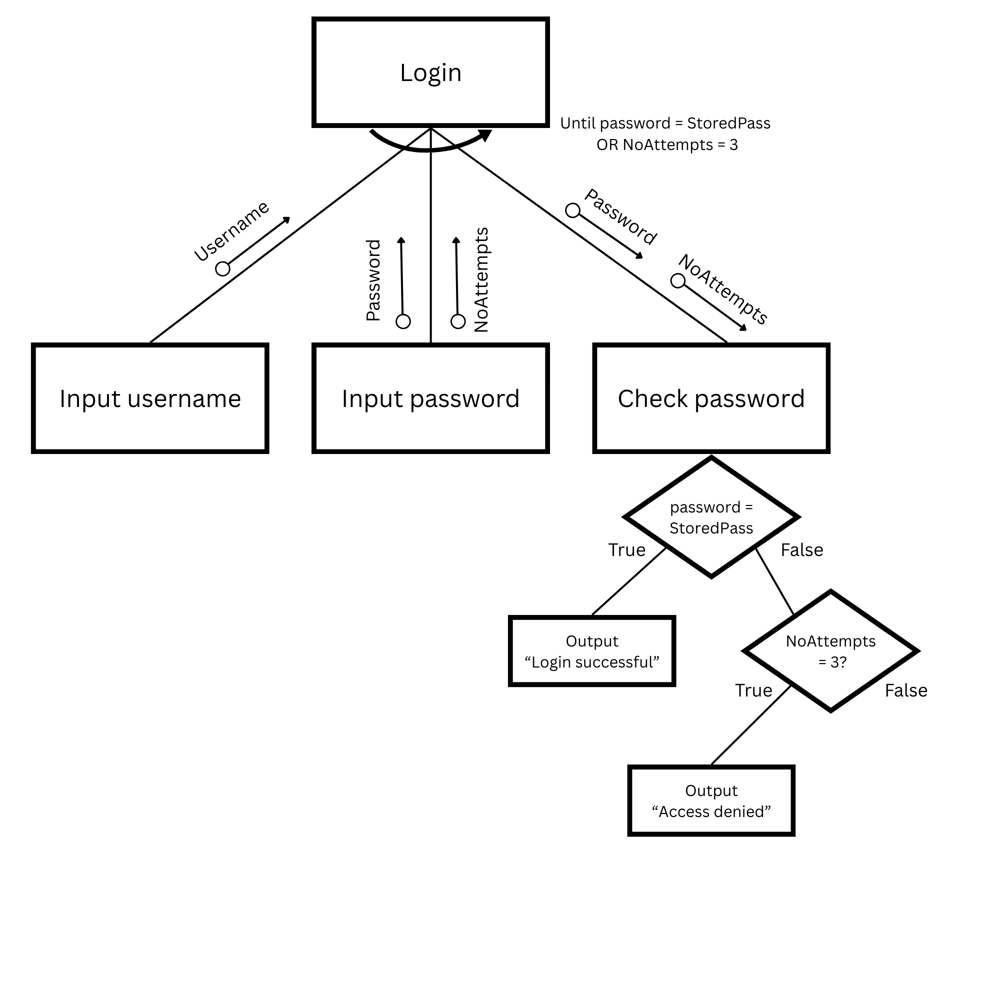
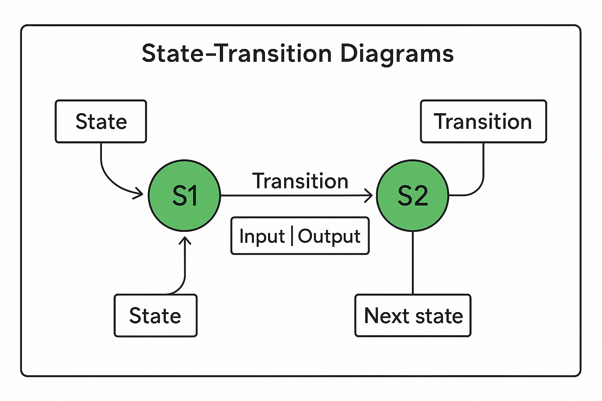
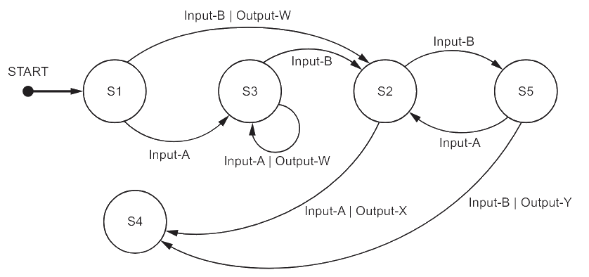

Structure Charts
Structure charts
What is a structure chart?
- A structure chart is a modelling tool used in the design stage of program development
- It helps to decompose a problem into smaller, manageable sub-tasks, representing each as a module
- Structure charts focus on what the program does, not how it does it
Example
- A program that asks a user to enter their username and password
- Checks if the password matches the stored password and uses a counter to track how many times it is checked
- If the password matches, a successful message is displayed, else after three failed attempts a ‘denied’ message is displayed
- A structure chart might look like:

Key features
| Feature |
Explanation |
| Top-down design |
The chart starts with the main program and breaks it into sub-modules |
| Decomposition |
Each module represents a specific task or function |
| Module boxes |
Each module is shown as a box |
| Vertical lines |
Show control flow – which module calls which |
| Parameter arrows |
Arrows pointing into modules show data being passed in or returned |
| Stepwise refinement |
Each level adds more detail to the task above |
| Diamond shape |
Shows a condition that could be true or false |
| Semi-circular arrow |
Indicates repetition |
Pseudocode from structure chart
- The first step is to create an identifier table
| Identifier |
Data type |
Description |
Username |
STRING |
Stores the username entered by the user |
Password |
STRING |
Stores the password entered by the user |
StoredPass |
STRING |
The correct password stored in the system for comparison |
NoAttempts |
INTEGER |
Counts the number of failed login attempts |
LoginSuccess |
BOOLEAN |
Indicates whether the login was successful |
- Next, identify is any functions or procedures could be used
| Module |
Type |
Purpose |
GetCredentials |
PROCEDURE |
Asks the user to input username and password |
CheckPassword |
FUNCTION |
Compares input password with stored password and returns TRUE/FALSE |
ShowAccessMessage |
PROCEDURE |
Displays success or failure message |
- Any finally, write the pseudocode
DECLARE Username : STRING
DECLARE Password : STRING
DECLARE StoredPass : STRING
DECLARE NoAttempts : INTEGER
DECLARE LoginSuccess : BOOLEAN
StoredPass ← "admin123"
NoAttempts ← 0
LoginSuccess ← FALSE
PROCEDURE GetCredentials()
OUTPUT "Enter username: "
INPUT Username
OUTPUT "Enter password: "
INPUT Password
ENDPROCEDURE
FUNCTION CheckPassword(P : STRING) RETURNS BOOLEAN
IF P = StoredPass THEN
RETURN TRUE
ELSE
RETURN FALSE
ENDIF
ENDFUNCTION
PROCEDURE ShowAccessMessage(Success : BOOLEAN)
IF Success = TRUE THEN
OUTPUT "Login successful"
ELSE
OUTPUT "Access denied"
ENDIF
ENDPROCEDURE
WHILE NoAttempts < 3 AND LoginSuccess = FALSE
CALL GetCredentials()
LoginSuccess ← CheckPassword(Password)
IF LoginSuccess = FALSE THEN
OUTPUT "Incorrect password"
NoAttempts ← NoAttempts + 1
ENDIF
ENDWHILE
CALL ShowAccessMessage(LoginSuccess)
State-Transition Diagrams
What are state-transition diagrams?
- A state-transition diagram shows how a system moves between different states based on inputs
- Each state represents a condition or situation of the system
- Transitions are arrows that show movement between states when certain inputs occur
- Transitions may also produce outputs, shown as labels on the arrows
- These diagrams model finite-state machines (FSMs), which are widely used in computing
Key elements
| Element |
Description |
| State |
Circle labelled with a name (e.g. S1, S2) showing a situation the system can be in |
| Initial state |
Starting point, sometimes marked with an arrow pointing to it |
| Transition |
Arrow from one state to another, labelled with input and output |
| Input |
Event or data that causes a transition (e.g. Button-Y pressed) |
| Output |
Action or signal produced by a transition (e.g. Output-A) |
| Next state |
The state the system moves into after the transition |
- Labels are often written as Input | Output
- If no output is produced, “none” may be written
- Example:
Button-Y | Output-B means pressing Button-Y in the current state produces Output-B and causes a transition to the next state
-
The diagram below shows the key features of a state-transition diagram:

-
States are circles labelled S1, S2, etc
- Transitions are arrows between states, labelled with Input | Output
- The initial state is marked with an incoming arrow
Completing transition tables
- Exam questions often ask you to convert a diagram into a table
- The table normally has columns for Current state, Input, Output, Next state
- Work through the diagram row by row, following the arrows for each possible input
Example table structure:
| Current state |
Input |
Output |
Next state |
| S1 |
Button-Y |
Output-A |
S2 |
| S1 |
Button-Z |
Output-B |
S3 |
- Always identify the initial state before tracing
- Highlight or mark inputs and outputs on your diagram to avoid missing one
- For tables, keep the order consistent: Input → Output → Next state
- Use arrows systematically, avoid guessing paths
- Remember: more than one sequence can sometimes reach the same state, but exams often ask for the minimum changes
Part of a program is represented by the following state‑transition diagram

A. Complete the table to show the inputs, outputs and next states.
Assume that the current state for each row is given by the ‘Next state’ on the previous row. For example, the first Input‑A is made when in state S1.
If there is no output for a given transition, then the output cell should contain ‘none’.
The first two rows have been completed.
| Input |
Output |
Next state |
|
|
S1 |
| Input-A |
none |
S3 |
|
Output-W |
|
|
none |
|
| Input-B |
|
|
| Input-A |
|
|
|
|
S4 |
[5]
B. Identify the input sequence that will cause the minimum number of state changes in the transition from S1 to S4
[1]
Answers
A.
| Input |
Output |
Next state |
|
|
S1 |
| Input-A |
none |
S3 |
| Input-A |
Output-W |
S3 |
| Input-B |
none |
S2 |
| Input-B |
none |
S5 |
| Input-A |
none |
S2 |
| Input-A |
Output-X |
S4 |
- One mark per row 3 to 7 [5 marks]
B. Input-B, Input-A [1 mark]
← Back to All Notes